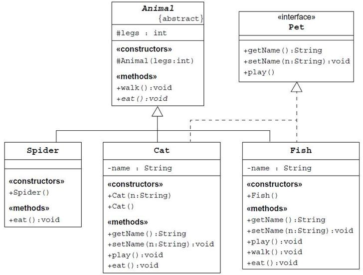

Реализуйте все классы и интерфейсы как это показано на UML-диаграмме внизу.
Пусть само тело методов выводит сообщения на экран вида Cat.eat, где Cat имя класса, а eat - метода, чтобы можно было понять вызов какого метода и класса произошел.
Абстрактный класс Animal уже создан, нужно дополнить иерархию в соответствии с диаграммой.
Пусть все типы содержат конструкторы без аргументов, вызывающие конструктор Animal c передачей числа конечностей (например super(4)).
Для увеличения рисунка панель Task можно растянуть и/или отсоединить в виде отдельного окна.
Для этого щелкните по шестерёнке в правом углу панели Task и в выпавшем окне выберите View Mode - Window.
Для проверки решения щелкните Check
Ожидаемый результат: Тесты должны завершиться успешно с надписью Correct.
